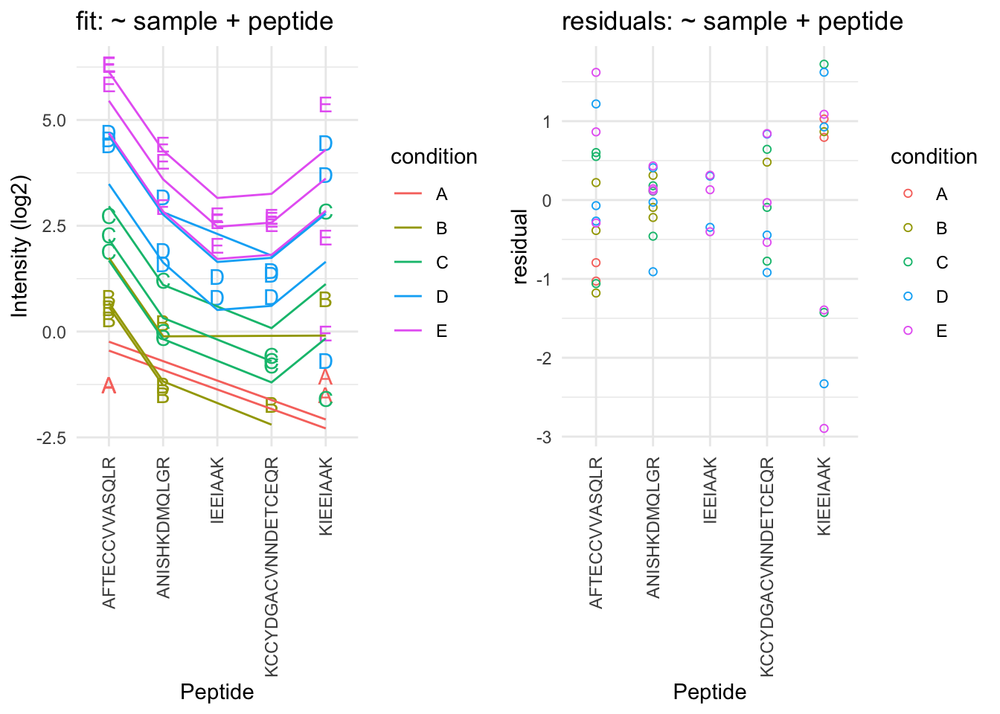

Sources of variability in label-free proteomics experiments
Lieven Clement
statOmics, Ghent University

This is part of the online course Experimental Design and Data-Analysis in Label-Free Quantitative LC/MS Proteomics - A Tutorial with msqrob2 (hupo21)
Click to see libraries that are loaded
1 Intro
- Background + cptac study
- Sources of variability
- Summarization
1.1 MS-based workflow

Peptide Characteristics
- Modifications
- Ionisation Efficiency: huge variability
- Identification
- Misidentification \(\rightarrow\) outliers
- MS\(^2\) selection on peptide abundance
- Context depending missingness
- Non-random missingness
\(\rightarrow\) Unbalanced pepide identifications across samples and messy data
1.2 CPTAC Spike-in Study

Same trypsin-digested yeast proteome background in each sample
Trypsin-digested Sigma UPS1 standard: 48 different human proteins spiked in at 5 different concentrations (treatment A-E)
Samples repeatedly run on different instruments in different labs
After MaxQuant search with match between runs option
- 41% of all proteins are quantified in all samples
- 6.6% of all peptides are quantified in all samples
\(\rightarrow\) vast amount of missingness
1.2.1 Maxquant output
1.2.2 Read data
Click to see background and code
- We use a peptides.txt file from MS-data quantified with maxquant that contains MS1 intensities summarized at the peptide level.
peptidesFile <- "https://raw.githubusercontent.com/statOmics/PDA21/data/quantification/fullCptacDatasSetNotForTutorial/peptides.txt"- Maxquant stores the intensity data for the different samples in columnns that start with Intensity. We can retreive the column names with the intensity data with the code below:
- Read the data and store it in QFeatures object
1.2.3 Design
Click to see background and code
## CharacterList of length 1
## [["peptideRaw"]] Intensity.6A_1 Intensity.6A_2 ... Intensity.6E_9Note, that the sample names include the spike-in condition.
They also end on a number.
- 1-3 is from lab 1,
- 4-6 from lab 2 and
- 7-9 from lab 3.
We update the colData with information on the design
colData(pe)$lab <- rep(rep(paste0("lab",1:3),each=3),5) %>% as.factor
colData(pe)$condition <- pe[["peptideRaw"]] %>% colnames %>% substr(12,12) %>% as.factor
colData(pe)$spikeConcentration <- rep(c(A = 0.25, B = 0.74, C = 2.22, D = 6.67, E = 20),each = 9)- We explore the colData
## DataFrame with 45 rows and 3 columns
## lab condition spikeConcentration
## <factor> <factor> <numeric>
## Intensity.6A_1 lab1 A 0.25
## Intensity.6A_2 lab1 A 0.25
## Intensity.6A_3 lab1 A 0.25
## Intensity.6A_4 lab2 A 0.25
## Intensity.6A_5 lab2 A 0.25
## ... ... ... ...
## Intensity.6E_5 lab2 E 20
## Intensity.6E_6 lab2 E 20
## Intensity.6E_7 lab3 E 20
## Intensity.6E_8 lab3 E 20
## Intensity.6E_9 lab3 E 202 Sources of variation
2.1 Intensities of one peptide
Peptide AALEELVK from spiked-in UPS protein P12081. We only show data from lab1.
Click to see code to make plot
- Variance increases with the mean \(\rightarrow\) Multiplicative error structure
Click to see code to make plot
plotLog <- data.frame(concentration = colData(subset)$spikeConcentration,
y = assay(subset[["peptideRaw"]]) %>% c
) %>%
ggplot(aes(concentration, y)) +
geom_point() +
scale_x_continuous(trans='log2') +
scale_y_continuous(trans='log2') +
xlab("concentration (fmol/l)") +
ggtitle("peptide AALEELVK in lab1 with axes on log scale")
- Data seems to be homoscedastic on log-scale \(\rightarrow\) log transformation of the intensity data
- In quantitative proteomics analysis on \(\log_2\)
\(\rightarrow\) Differences on a \(\log_2\) scale: \(\log_2\) fold changes
\[ \log_2 B - \log_2 A = \log_2 \frac{B}{A} = \log FC_\text{B - A} \] \[ \begin{array} {l} log_2 FC = 1 \rightarrow FC = 2^1 =2\\ log_2 FC = 2 \rightarrow FC = 2^2 = 4\\ \end{array} \]
2.2 Log-transform
Click to see code to log-transfrom the data
- We calculate how many non zero intensities we have for each peptide and this can be useful for filtering.
- Peptides with zero intensities are missing peptides and should be represent with a
NAvalue rather than0.
- Logtransform data with base 2
2.3 Filtering
Click to see code to filter the data
- Handling overlapping protein groups
In our approach a peptide can map to multiple proteins, as long as there is none of these proteins present in a smaller subgroup.
pe <- filterFeatures(pe, ~ Proteins %in% smallestUniqueGroups(rowData(pe[["peptideLog"]])$Proteins))- Remove reverse sequences (decoys) and contaminants
We now remove the contaminants, peptides that map to decoy sequences, and proteins which were only identified by peptides with modifications.
- Drop peptides that were only identified in one sample
We keep peptides that were observed at last twice.
## [1] 104782.4 Technical Variability
Click to see code for plot
densityConditionD <- pe[["peptideLog"]][,colData(pe)$condition=="D"] %>%
assay %>%
as.data.frame() %>%
gather(sample, intensity) %>%
mutate(lab = colData(pe)[sample,"lab"]) %>%
ggplot(aes(x=intensity,group=sample,color=lab)) +
geom_density() +
ggtitle("condition D")
densityLab2 <- pe[["peptideLog"]][,colData(pe)$lab=="lab2"] %>%
assay %>%
as.data.frame() %>%
gather(sample, intensity) %>%
mutate(condition = colData(pe)[sample,"condition"]) %>%
ggplot(aes(x=intensity,group=sample,color=condition)) +
geom_density() +
ggtitle("lab2")## Warning: Removed 39179 rows containing non-finite values (stat_density).
## Warning: Removed 44480 rows containing non-finite values (stat_density).
Even in very clean synthetic dataset (same background, only 48 UPS proteins can be different) the marginal peptide intensity distribution across samples can be quite distinct
Considerable effects between and within labs for replicate samples
Considerable effects between samples with different spike-in concentration
\(\rightarrow\) Normalization is needed
2.5 Normalization
Normalization of the data by median centering
\[y_{ip}^\text{norm} = y_{ip} - \hat\mu_i\] with \(\hat\mu_i\) the median intensity over all observed peptides in sample \(i\).
Click to see R-code to normalize the data
Click to see code to make plot
densityConditionDNorm <- pe[["peptideNorm"]][,colData(pe)$condition=="D"] %>%
assay %>%
as.data.frame() %>%
gather(sample, intensity) %>%
mutate(lab = colData(pe)[sample,"lab"]) %>%
ggplot(aes(x=intensity,group=sample,color=lab)) +
geom_density() +
ggtitle("condition D")
densityLab2Norm <- pe[["peptideNorm"]][,colData(pe)$lab=="lab2"] %>%
assay %>%
as.data.frame() %>%
gather(sample, intensity) %>%
mutate(condition = colData(pe)[sample,"condition"]) %>%
ggplot(aes(x=intensity,group=sample,color=condition)) +
geom_density() +
ggtitle("lab2")## Warning: Removed 39179 rows containing non-finite values (stat_density).
## Warning: Removed 44480 rows containing non-finite values (stat_density).2.6 Pseudo replication
Click to see code to make plot
prot <- "P01031ups|CO5_HUMAN_UPS"
data <- pe[["peptideNorm"]][
rowData(pe[["peptideNorm"]])$Proteins == prot,
colData(pe)$lab=="lab3"] %>%
assay %>%
as.data.frame %>%
rownames_to_column(var = "peptide") %>%
gather(sample, intensity, -peptide) %>%
mutate(condition = colData(pe)[sample,"condition"]) %>%
na.exclude
sumPlot <- data %>%
ggplot(aes(x = peptide, y = intensity, color = condition, group = sample, label = condition), show.legend = FALSE) +
geom_text(show.legend = FALSE) +
theme_minimal() +
theme(axis.text.x = element_text(angle = 90, vjust = 0.5, hjust = 1)) +
xlab("Peptide") +
ylab("Intensity (log2)") +
ggtitle(paste0("protein: ",prot))
Sources of variability in plot:
- Between treatment variability
- Between sample variability
- Between peptide variability
- within sample variability
Multiple peptides from same protein in a sample
Peptide intensities in the same sample are correlated: Pseudo replication
\(\rightarrow\) Summarization!
- Strong peptide effect
- Unbalanced peptide identification
2.6.1 Illustration on subset of CPTAC study: A vs B comparison in lab 3
2.6.1.1 LFQ
Click to see background and code
- Import data
proteinsFile <- "https://raw.githubusercontent.com/statOmics/PDA21/data/quantification/cptacAvsB_lab3/proteinGroups.txt"
ecols <- grep("LFQ\\.intensity\\.", names(read.delim(proteinsFile)))
peLFQ <- readQFeatures(
table = proteinsFile, fnames = 1, ecol = ecols,
name = "proteinRaw", sep = "\t"
)
cond <- which(
strsplit(colnames(peLFQ)[[1]][1], split = "")[[1]] == "A") # find where condition is stored
colData(peLFQ)$condition <- substr(colnames(peLFQ), cond, cond) %>%
unlist %>%
as.factor- Preprocessing
rowData(peLFQ[["proteinRaw"]])$nNonZero <- rowSums(assay(peLFQ[["proteinRaw"]]) > 0)
peLFQ <- zeroIsNA(peLFQ, "proteinRaw") # convert 0 to NA
peLFQ <- logTransform(peLFQ, base = 2, i = "proteinRaw", name = "proteinLog")
peLFQ <- filterFeatures(peLFQ,~ Reverse != "+")
peLFQ <- filterFeatures(peLFQ,~ Potential.contaminant != "+")
peLFQ <- normalize(peLFQ,
i = "proteinLog",
name = "protein",
method = "center.median")- Modeling and Inference
peLFQ <- msqrob(object = peLFQ, i = "protein", formula = ~condition)
L <- makeContrast("conditionB=0", parameterNames = c("conditionB"))
peLFQ <- hypothesisTest(object = peLFQ, i = "protein", contrast = L)
volcanoLFQ <- ggplot(rowData(peLFQ[["protein"]])$conditionB,
aes(x = logFC, y = -log10(pval), color = adjPval < 0.05)) +
geom_point(cex = 2.5) +
scale_color_manual(values = alpha(c("black", "red"), 0.5)) +
theme_minimal() +
ggtitle(paste0("maxLFQ: TP = ",sum(rowData(peLFQ[["protein"]])$conditionB$adjPval<0.05&grepl(rownames(rowData(peLFQ[["protein"]])$conditionB),pattern ="UPS"),na.rm=TRUE), " FP = ", sum(rowData(peLFQ[["protein"]])$conditionB$adjPval<0.05&!grepl(rownames(rowData(peLFQ[["protein"]])$conditionB),pattern ="UPS"),na.rm=TRUE)))2.6.1.2 Median & robust summarization
Click to see background and code
- Import Data
peptidesFile <- "https://raw.githubusercontent.com/statOmics/SGA2020/data/quantification/cptacAvsB_lab3/peptides.txt"
ecols <- grep(
"Intensity\\.",
names(read.delim(peptidesFile))
)
peAB <- readQFeatures(
table = peptidesFile,
fnames = 1,
ecol = ecols,
name = "peptideRaw", sep="\t")
cond <- which(
strsplit(colnames(peAB)[[1]][1], split = "")[[1]] == "A") # find where condition is stored
colData(peAB)$condition <- substr(colnames(peAB), cond, cond) %>%
unlist %>%
as.factor- Preprocessing
rowData(peAB[["peptideRaw"]])$nNonZero <- rowSums(assay(peAB[["peptideRaw"]]) > 0)
peAB <- zeroIsNA(peAB, "peptideRaw") # convert 0 to NA
peAB <- logTransform(peAB, base = 2, i = "peptideRaw", name = "peptideLog")
peAB <- filterFeatures(peAB, ~ Proteins %in% smallestUniqueGroups(rowData(peAB[["peptideLog"]])$Proteins))
peAB <- filterFeatures(peAB,~Reverse != "+")
peAB <- filterFeatures(peAB,~ Potential.contaminant != "+")
peAB <- filterFeatures(peAB,~ nNonZero >=2)
nrow(peAB[["peptideLog"]])## [1] 7011peAB <- normalize(peAB,
i = "peptideLog",
name = "peptideNorm",
method = "center.median")
peAB <- aggregateFeatures(peAB,
i = "peptideNorm",
fcol = "Proteins",
na.rm = TRUE,
name = "proteinMedian",
fun = matrixStats::colMedians)
peAB <- aggregateFeatures(peAB,
i = "peptideNorm",
fcol = "Proteins",
na.rm = TRUE,
name = "proteinRobust")- Modeling and inference
peAB <- msqrob(object = peAB, i = "proteinMedian", formula = ~condition)
L <- makeContrast("conditionB=0", parameterNames = c("conditionB"))
peAB <- hypothesisTest(object = peAB, i = "proteinMedian", contrast = L)
peAB <- msqrob(object = peAB, i = "proteinRobust", formula = ~condition)
peAB <- hypothesisTest(object = peAB, i = "proteinRobust", contrast = L)
volcanoMedian <- ggplot(rowData(peAB[["proteinMedian"]])$conditionB,
aes(x = logFC, y = -log10(pval), color = adjPval < 0.05)) +
geom_point(cex = 2.5) +
scale_color_manual(values = alpha(c("black", "red"), 0.5)) +
theme_minimal() +
ggtitle(paste0("Median: TP = ",sum(rowData(peAB[["proteinMedian"]])$conditionB$adjPval<0.05&grepl(rownames(rowData(peAB[["proteinMedian"]])$conditionB),pattern ="UPS"),na.rm=TRUE), " FP = ", sum(rowData(peAB[["proteinMedian"]])$conditionB$adjPval<0.05&!grepl(rownames(rowData(peAB[["proteinMedian"]])$conditionB),pattern ="UPS"),na.rm=TRUE)))
volcanoRobust<- ggplot(rowData(peAB[["proteinRobust"]])$conditionB,
aes(x = logFC, y = -log10(pval), color = adjPval < 0.05)) +
geom_point(cex = 2.5) +
scale_color_manual(values = alpha(c("black", "red"), 0.5)) +
theme_minimal() +
ggtitle(paste0("Robust: TP = ",sum(rowData(peAB[["proteinRobust"]])$conditionB$adjPval<0.05&grepl(rownames(rowData(peAB[["proteinRobust"]])$conditionB),pattern ="UPS"),na.rm=TRUE), " FP = ", sum(rowData(peAB[["proteinRobust"]])$conditionB$adjPval<0.05&!grepl(rownames(rowData(peAB[["proteinRobust"]])$conditionB),pattern ="UPS"),na.rm=TRUE)))ylims <- c(0,
ceiling(max(c(-log10(rowData(peLFQ[["protein"]])$conditionB$pval),
-log10(rowData(peAB[["proteinMedian"]])$conditionB$pval),
-log10(rowData(peAB[["proteinRobust"]])$conditionB$pval)),
na.rm=TRUE))
)
xlims <- max(abs(c(rowData(peLFQ[["protein"]])$conditionB$logFC,
rowData(peAB[["proteinMedian"]])$conditionB$logFC,
rowData(peAB[["proteinRobust"]])$conditionB$logFC)),
na.rm=TRUE) * c(-1,1)compBoxPlot <- rbind(rowData(peLFQ[["protein"]])$conditionB %>% mutate(method="maxLFQ") %>% rownames_to_column(var="protein"),
rowData(peAB[["proteinMedian"]])$conditionB %>% mutate(method="median")%>% rownames_to_column(var="protein"),
rowData(peAB[["proteinRobust"]])$conditionB%>% mutate(method="robust")%>% rownames_to_column(var="protein")) %>%
mutate(ups= grepl(protein,pattern="UPS")) %>%
ggplot(aes(x = method, y = logFC, fill = ups)) +
geom_boxplot() +
geom_hline(yintercept = log2(0.74 / .25), color = "#00BFC4") +
geom_hline(yintercept = 0, color = "#F8766D")2.6.1.3 Comparison summarization methods
grid.arrange(volcanoLFQ + xlim(xlims) + ylim(ylims),
volcanoMedian + xlim(xlims) + ylim(ylims),
volcanoRobust + xlim(xlims) + ylim(ylims),
ncol=1)## Warning: Removed 746 rows containing missing values (geom_point).## Warning: Removed 166 rows containing missing values (geom_point).## Warning: Removed 167 rows containing missing values (geom_point).
- Robust summarization: highest power and still good FDR control: \(FDP = \frac{1}{20} = 0.05\).
## Warning: Removed 1079 rows containing non-finite values (stat_boxplot).
- Median: biased logFC estimates for spike-in proteins
- maxLFQ: more variable logFC estiamtes for spike-in proteins
2.6.2 Median summarization
We first evaluate median summarization for protein P01031ups|CO5_HUMAN_UPS.
Click to see code to make plot
dataHlp <- pe[["peptideNorm"]][
rowData(pe[["peptideNorm"]])$Proteins == prot,
colData(pe)$lab=="lab3"] %>% assay
sumMedian <- data.frame(
intensity= dataHlp
%>% colMedians(na.rm=TRUE)
,
condition= colnames(dataHlp) %>% substr(12,12) %>% as.factor )
sumMedianPlot <- sumPlot +
geom_hline(
data = sumMedian,
mapping = aes(yintercept=intensity,color=condition)) +
ggtitle("Median summarization")## Warning: Removed 1 rows containing missing values (geom_hline).
- The sample medians are not a good estimate for the protein expression value.
- Indeed, they do not account for differences in peptide effects
- Peptides that ionize poorly are also picked up in samples with high spike-in concencentration and not in samples with low spike-in concentration
- This introduces a bias.
2.6.3 Mean summarization
\[ y_{ip} = \beta_i^\text{sample} + \epsilon_{ip} \]Click to see code to make plot
sumMeanMod <- lm(intensity ~ -1 + sample,data)
sumMean <- data.frame(
intensity=sumMeanMod$coef[grep("sample",names(sumMeanMod$coef))],
condition= names(sumMeanMod$coef)[grep("sample",names(sumMeanMod$coef))] %>% substr(18,18) %>% as.factor )
sumMeanPlot <- sumPlot + geom_hline(
data = sumMean,
mapping = aes(yintercept=intensity,color=condition)) +
ggtitle("Mean summarization")## Warning: Removed 1 rows containing missing values (geom_hline).
2.6.4 Model based summarization
We can use a linear peptide-level model to estimate the protein expression value while correcting for the peptide effect, i.e.
\[ y_{ip} = \beta_i^\text{sample}+\beta^{peptide}_{p} + \epsilon_{ip} \]
Click to see code to make plot
sumMeanPepMod <- lm(intensity ~ -1 + sample + peptide,data)
sumMeanPep <- data.frame(
intensity=sumMeanPepMod$coef[grep("sample",names(sumMeanPepMod$coef))] + mean(data$intensity) - mean(sumMeanPepMod$coef[grep("sample",names(sumMeanPepMod$coef))]),
condition= names(sumMeanPepMod$coef)[grep("sample",names(sumMeanPepMod$coef))] %>% substr(18,18) %>% as.factor )
fitLmPlot <- sumPlot + geom_line(
data = data %>% mutate(fit=sumMeanPepMod$fitted.values),
mapping = aes(x=peptide, y=fit,color=condition, group=sample)) +
ggtitle("fit: ~ sample + peptide")
sumLmPlot <- sumPlot + geom_hline(
data = sumMeanPep,
mapping = aes(yintercept=intensity,color=condition)) +
ggtitle("Summarization: sample effect")## Warning: Removed 1 rows containing missing values (geom_hline).
By correcting for the peptide species the protein expression values are much better separated an better reflect differences in abundance induced by the spike-in condition.
Indeed, it shows that median and mean summarization that do not account for the peptide effect indeed overestimate the protein expression value in the small spike-in conditions and underestimate that in the large spike-in conditions.
Still there seem to be some issues with samples that for which the expression values are not well separated according to the spike-in condition.
A residual analysis clearly indicates potential issues:
Click to see code to make plot
resPlot <- data %>%
mutate(res=sumMeanPepMod$residuals) %>%
ggplot(aes(x = peptide, y = res, color = condition, label = condition), show.legend = FALSE) +
geom_point(shape=21) +
theme_minimal() +
theme(axis.text.x = element_text(angle = 90, vjust = 0.5, hjust = 1)) +
xlab("Peptide") +
ylab("residual") +
ggtitle("residuals: ~ sample + peptide")

- The residual plot shows some large outliers for peptide KIEEIAAK.
- Indeed, in the original plot the intensities for this peptide do not seem to line up very well with the concentration.
- This induces a bias in the summarization for some of the samples (e.g. for D and E)
2.6.5 Robust summarization using a peptide-level linear model
\[ y_{ip} = \beta_i^\text{sample}+\beta^{peptide}_{p} + \epsilon_{ip} \]
- Ordinary least squares: estimate \(\beta\) that minimizes \[ \text{OLS}: \sum\limits_{i,p} \epsilon_{ip}^2 = \sum\limits_{i,p}(y_{ip}-\beta_i^\text{sample}-\beta_p^\text{peptide})^2 \]
We replace OLS by M-estimation with loss function \[ \sum\limits_{i,p} w_{ip}\epsilon_{ip}^2 = \sum\limits_{i,p}w_{ip}(y_{ip}-\beta_i^\text{sample}-\beta_p^\text{peptide})^2 \]
- Iteratively fit model with observation weights \(w_{ip}\) until convergence
- The weights are calculated based on standardized residuals
Click to see code to make plot
sumMeanPepRobMod <- MASS::rlm(intensity ~ -1 + sample + peptide,data)
resRobPlot <- data %>%
mutate(res = sumMeanPepRobMod$residuals,
w = sumMeanPepRobMod$w) %>%
ggplot(aes(x = peptide, y = res, color = condition, label = condition,size=w), show.legend = FALSE) +
geom_point(shape=21,size=.2) +
geom_point(shape=21) +
theme_minimal() +
theme(axis.text.x = element_text(angle = 90, vjust = 0.5, hjust = 1)) +
xlab("Peptide") +
ylab("residual") +
ylim(c(-1,1)*max(abs(sumMeanPepRobMod$residuals)))
weightPlot <- qplot(
seq(-5,5,.01),
MASS::psi.huber(seq(-5,5,.01)),
geom="path") +
xlab("standardized residual") +
ylab("weight")
- We clearly see that the weights in the M-estimation procedure will down-weight errors associated with outliers for peptide KIEEIAAK.
Click to see code to make plot
sumMeanPepRob <- data.frame(
intensity=sumMeanPepRobMod$coef[grep("sample",names(sumMeanPepRobMod$coef))] + mean(data$intensity) - mean(sumMeanPepRobMod$coef[grep("sample",names(sumMeanPepRobMod$coef))]),
condition= names(sumMeanPepRobMod$coef)[grep("sample",names(sumMeanPepRobMod$coef))] %>% substr(18,18) %>% as.factor )
sumRlmPlot <- sumPlot + geom_hline(
data=sumMeanPepRob,
mapping=aes(yintercept=intensity,color=condition)) +
ggtitle("Robust")
- Robust regresion results in a better separation between the protein expression values for the different samples according to their spike-in concentration.
2.6.6 Comparison summarization methods
- maxLFQ

MS-stats also uses a robust peptide level model to perform the summarization, however, they typically first impute missing values
Proteus high-flyer method: mean of three peptides with highest intensity

- (Sticker et al. 2020)
- doi: https://doi.org/10.1074/mcp.RA119.001624
References
Sticker, A., L. Goeminne, L. Martens, and L. Clement. 2020. “Robust Summarization and Inference in Proteome-wide Label-free Quantification.” Mol Cell Proteomics 19 (7): 1209–19.